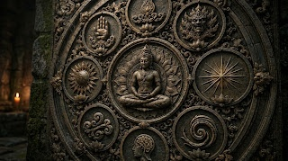

NAWA SAMADHI UTTAMOPADESA

Perumus Kawruh Uttamopadesa: Dhimas Purnomo, SH
Nawa Samadhi Uttamopadesa adalah bagian dari ajaran Kawruh Uttamopadesa yang dirumuskan oleh Dhimas Purnomo, SH, berkaitan dengan keadaan kesadaran manusia yang telah selaras dengan kasunyatan dan tatanan panguripan.
Samadhi dalam kerangka ini tidak semata-mata dipahami sebagai kegiatan menyendiri, bertapa, atau memasuki keadaan tertentu melalui cara-cara khusus, melainkan sebagai keadaan kesadaran yang hadir secara utuh dalam menjalani kehidupan.
Nawa Samadhi menggambarkan sembilan tahapan atau keadaan yang menunjukkan semakin jernihnya kesadaran dalam memahami diri, kehidupan, dan kenyataan.
Kesadaran tidak lagi mudah dikuasai oleh dorongan sesaat, prasangka, maupun kekacauan batin. Cipta menjadi semakin wening, rasa semakin tulus, dan karsa semakin utama sehingga tindakan manusia memiliki arah yang selaras dengan tatanan panguripan.
Dengan demikian, Nawa Samadhi bukan bertujuan untuk melarikan diri dari kehidupan, tetapi merupakan jalan untuk menghadirkan kesadaran yang utuh di dalam kehidupan nyata. Samadhi diwujudkan melalui cara berpikir, merasakan, menentukan kehendak, dan bertindak secara sadar.
Hakikat Samadhi dalam Kawruh Uttamopadesa
Dalam pemahaman umum, samadhi sering dikaitkan dengan keadaan meditasi yang mendalam. Namun, dalam Kawruh Uttamopadesa, samadhi memiliki pengertian yang lebih luas.
Samadhi bukan sekadar kegiatan duduk dalam keheningan, memusatkan pikiran, atau melakukan latihan tertentu dalam waktu tertentu. Samadhi merupakan keadaan ketika manusia mampu menyelaraskan dirinya dengan hakikat kehidupan.
Samadhi ditandai oleh tiga hal utama, yaitu cipta menjadi jernih, rasa menjadi tulus, dan karsa menjadi selaras atau utama. Dengan demikian, samadhi bukan keadaan kehilangan kesadaran, melainkan keadaan ketika kesadaran manusia justru menjadi lebih utuh.
Pemahaman tersebut menjadikan samadhi bukan sebagai pelarian dari kehidupan. Manusia yang menghayati samadhi tidak perlu meninggalkan dunia, keluarga, pekerjaan, maupun tanggung jawab sosial.
Sebaliknya, kejernihan yang diperoleh melalui samadhi justru dibawa ke dalam kehidupan sehari-hari agar setiap ucapan, sikap, keputusan, dan tindakan dapat dijalankan dengan lebih bijaksana.
Karena itu, keberhasilan samadhi tidak terutama diukur dari lamanya seseorang berada dalam keheningan, melainkan dari perubahan nyata yang muncul dalam kehidupannya.
Semakin jernih cipta, semakin tenteram rasa, dan semakin luhur karsa, semakin nyata pula buah samadhi dalam perilaku.
Dalam Serat Nawa Samadhi Uttamopadesa, karya Dhimas Purnomo, samadhi dijelaskan melalui sembilan tahapan pendalaman. Sembilan tahap tersebut bukan tingkatan untuk membandingkan manusia satu dengan yang lain, melainkan gambaran perjalanan pribadi menuju keselarasan yang semakin utuh.
Samadhi sebagai Penyatuan Cipta, Rasa, dan Karsa
Kehidupan manusia sering mengalami pertentangan di dalam dirinya. Cipta menginginkan sesuatu, rasa merasakan sesuatu yang berbeda, sedangkan karsa terkadang melakukan sesuatu yang tidak sesuai dengan keduanya. Ketidaksesuaian tersebut dapat menimbulkan kegelisahan dan membuat manusia sulit menjalani kehidupan secara utuh.
Samadhi dalam Uttamopadesa merupakan proses penyelarasan kembali unsur-unsur tersebut. Cipta diarahkan menuju kejernihan, rasa menuju ketenteraman, dan karsa menuju kebajikan.
Ketika ketiganya mulai selaras, manusia tidak lagi terus-menerus berperang dengan dirinya sendiri. Ia menjadi lebih mampu memahami keadaan, mengendalikan dorongan, dan menentukan tindakan dengan pertimbangan yang jernih.
Dari sinilah perjalanan Nawa Samadhi dimulai melalui sembilan tahapan berikut.
1. Samadhi Panarik Menarik Cipta dari Godaan Dunia
Samadhi Panarik merupakan tahap pertama. Pada tahap ini manusia mulai belajar menarik cipta dari berbagai hal yang dapat mengganggu ketenteraman batin.
Harta, kedudukan, kemuliaan, penghormatan, keinginan yang tidak terbatas, dan berbagai godaan dunia tidak lagi dibiarkan menjadi penguasa cipta. Pancaindra tetap menerima segala sesuatu yang terjadi, tetapi cipta tidak mudah terseret oleh keinginan yang berlebihan.
Panarik tidak berarti meninggalkan dunia. Manusia tetap bekerja, mencari penghidupan, membina keluarga, dan menjalankan tanggung jawabnya. Perbedaannya terletak pada keterikatan. Dunia tidak lagi dipandang sebagai sesuatu yang harus dikuasai demi kepentingan diri, melainkan sebagai bagian kehidupan yang harus dijalani dengan bijaksana.
Harta dan kedudukan dipahami sebagai titipan yang seharusnya digunakan untuk kebaikan. Ketika pamrih dan keterikatan mulai berkurang, rasa menjadi lebih tenteram dan karsa mulai mengarah kepada kebajikan.
Samadhi Panarik menjadi dasar bagi tahap berikutnya, yaitu pengamatan terhadap diri sendiri.
2. Samadhi Pamawas Pengamatan Batin
Setelah cipta mulai tidak mudah terseret oleh godaan dunia, manusia memasuki Samadhi Pamawas. Pada tahap ini perhatian diarahkan kepada gerak cipta, rasa, dan karsa di dalam dirinya sendiri.
Manusia belajar mengamati munculnya pamrih, hawa nafsu, kesombongan, kemarahan, kegelisahan, maupun kecenderungan lain tanpa langsung mengikuti semuanya.
Pamawas bukan sekadar memusatkan pikiran. Ia merupakan kebiasaan mengamati diri secara jernih tanpa memihak. Karena itu, tahap ini memiliki hubungan erat dengan Pamawas Jroning Batin, yaitu kebiasaan melihat keadaan diri setiap hari. Melalui pengamatan yang terus-menerus, manusia mulai mampu membedakan antara dorongan yang perlu diikuti dan dorongan yang perlu dilepaskan.
Dari pengamatan tersebut lahirlah kejernihan yang menjadi dasar Samadhi Wening.
3. Samadhi Wening Batin Mulai Menjadi Jernih
Samadhi Wening merupakan tahap ketika cipta mulai terbebas dari keramaian pikiran, kegelisahan, pamrih, dan prasangka.
Wening tidak berarti dunia menjadi sunyi. Manusia tetap mendengar suara, melihat berbagai peristiwa, merasakan keadaan tubuh, dan menjalankan kehidupan sebagaimana biasa. Yang berubah adalah hubungan manusia dengan semua itu.
Keadaan di luar tidak lagi mudah mengguncang ketenteraman di dalam diri. Manusia menjadi lebih tenang dalam melihat persoalan dan tidak tergesa-gesa memberikan penilaian.
Pada tahap ini cipta menjadi semakin bening, rasa semakin halus, dan karsa semakin mantap menuju kebajikan. Kejernihan tersebut kemudian tidak hanya dirasakan ketika bersamadhi, tetapi mulai dibawa ke dalam kehidupan sehari-hari.
Samadhi Wening menjadi dasar bagi tumbuhnya ketenteraman yang lebih utuh.
4. Samadhi Tentrem Ketenteraman Cipta, Rasa, dan Karsa
Pada Samadhi Tentrem, ketenteraman tidak lagi hanya berada pada tataran cipta. Rasa dan karsa mulai ikut berada dalam keselarasan.
Kemarahan, kebencian, iri hati, kesombongan, dan dorongan buruk tidak lagi mudah menguasai diri. Cipta menjadi jernih, rasa menjadi halus, dan karsa semakin mantap memilih kebajikan.
Buahnya mulai terlihat dalam perilaku. Manusia menjadi lebih sabar, mudah memaafkan, peduli terhadap sesama, serta tidak merasa perlu membalas keburukan dengan keburukan.
Pada tahap ini mulai tumbuh Laku Sih, yaitu kasih yang diwujudkan dalam tindakan nyata.
Dengan demikian, samadhi mulai menunjukkan ukuran yang sesungguhnya: bukan pengalaman batin yang luar biasa, tetapi perubahan perilaku. Semakin baik perilaku seseorang, semakin nyata pula buah samadhinya.
5. Samadhi Kawruh Pengetahuan sebagai Penuntun
Samadhi Kawruh merupakan tahap ketika pengetahuan mulai berfungsi sebagai penerang perjalanan manusia. Akal tetap digunakan untuk memahami kehidupan.
Namun, akal tidak lagi menjadi penguasa batin. Akal digunakan untuk membedakan yang benar dan yang keliru, sedangkan budi mengarahkan pengetahuan tersebut kepada kebajikan.
Manusia mulai memahami bahwa kehidupan saling berhubungan dalam satu Tatananing Panguripan. Pengetahuan mengenai kehidupan tidak berhenti sebagai pemahaman intelektual, tetapi mulai menerangi cara manusia menjalani hidup.
Pada tahap ini pengetahuan justru seharusnya melahirkan kerendahan hati. Semakin luas pengetahuan seseorang, semakin ia memahami bahwa pengetahuan bukan tujuan akhir.
Samadhi Kawruh menjadi jembatan menuju tahap ketika pengetahuan tidak lagi hanya dipahami, tetapi mulai dihayati.
6. Samadhi Pangrasa Pengetahuan Menjadi Penghayatan
Samadhi Pangrasa merupakan tahap ketika pengetahuan mulai menyatu dengan kehidupan.
Apa yang sebelumnya dipahami melalui akal kini mulai dirasakan sebagai kenyataan hidup. Manusia tidak lagi sibuk memenangkan perdebatan atau menunjukkan keluasan pengetahuan. Yang menjadi ukuran bukan lagi siapa yang paling pandai berbicara, melainkan siapa yang paling benar dalam menjalani kehidupan.
Pada tahap ini pengetahuan telah menjadi penghayatan. Penghayatan menjadi laku, dan laku perlahan menjadi watak.
Cipta semakin jernih, rasa semakin halus, karsa semakin baik, dan budi semakin luhur. Apa yang diketahui tidak lagi berdiri terpisah dari apa yang dilakukan.
Inilah peralihan penting dalam perjalanan samadhi: kawruh tidak lagi hanya berada di dalam pikiran, tetapi mulai hidup di dalam diri manusia.
7. Samadhi Pepadhang Pepadhang Batin
Samadhi Pepadhang merupakan tahap ketika kejernihan batin mulai menjadi pepadhang dalam memahami kehidupan.
Pepadhang di sini bukan cahaya yang terlihat oleh mata. Pepadhang merupakan kejernihan yang menerangi cara manusia memahami peristiwa, mengambil keputusan, dan menjalani kehidupan.
Keraguan serta kekacauan pikiran semakin berkurang. Manusia tidak lagi bergantung sepenuhnya pada penalaran untuk memahami segala sesuatu karena pengetahuan telah menyatu dengan penghayatan.
Pada tahap ini seseorang tidak lagi memiliki kebutuhan besar untuk menunjukkan kepandaian atau mencari kemenangan dalam perbedaan pendapat. Perhatian utamanya adalah menjaga agar ucapan, sikap, dan tindakan tetap selaras dengan kebajikan dan Tatananing Panguripan.
Pepadhang kasunyatan semakin mudah diterima ketika batin semakin bening. Dari sinilah tumbuh kebijaksanaan yang tidak lagi berpusat pada kepentingan pribadi, melainkan mengarah kepada kebaikan bersama.
8. Samadhi Suci Kejernihan Tanpa Pamrih
Samadhi Suci merupakan tahap kedelapan. Pada tahap ini pemurnian batin berlangsung semakin mendalam.
Pamrih pribadi, keinginan untuk dipuji, keinginan dianggap lebih tinggi, bahkan keinginan untuk dipandang lebih benar atau lebih suci mulai kehilangan kekuatannya.
Hal tersebut penting karena pamrih tidak selalu berbentuk keinginan terhadap harta atau kedudukan. Keinginan untuk memperoleh pengakuan spiritual atau merasa lebih unggul dalam memahami kebenaran juga dapat menjadi keterikatan.
Ketika pamrih semakin lenyap, cipta menjadi semakin bersih, rasa semakin tulus, dan karsa semakin luhur.
Samadhi mulai tidak lagi terasa sebagai kegiatan yang sedang dilakukan. Kejernihan mulai menjadi bagian dari kehidupan.
Manusia menjalani kehidupannya dengan ketulusan dan mengarahkan tindakannya kepada kebaikan tanpa terus menuntut balasan.
Tahap ini menjadi persiapan menuju Samadhi Sampurna.
9. Samadhi Sampurna Kembali Selaras dengan Sang Sumber Panguripan
Samadhi Sampurna merupakan tahap kesembilan sekaligus puncak perjalanan Nawa Samadhi Uttamopadesa. Namun, kesempurnaan bukan berarti berakhirnya kehidupan atau berhentinya manusia menjalani kehidupan duniawi. Justru pada tahap ini samadhi benar-benar menjadi cara hidup.
Cipta, rasa, dan karsa telah semakin dimurnikan sehingga hidup dalam keselarasan dengan Tatananing Panguripan. Pamrih, kesombongan, dan keterikatan duniawi tidak lagi menjadi penguasa kehidupan.
Pengetahuan telah menjadi penghayatan. Penghayatan telah menjadi perilaku. Perilaku telah menjadi watak. Watak kemudian menjadi jalan hidup.
Manusia tetap memiliki jati dirinya. Ia tidak kehilangan keberadaan atau melebur menjadi sesuatu yang lain. Yang berubah adalah keselarasan kehidupannya. Cipta menjadi jernih, rasa menjadi tulus, karsa menjadi luhur, dan budi berkembang menjadi semakin bijaksana.
Karena itu, Wangsul Marang Sang Sumber Panguripan bukan berarti manusia lenyap atau kehilangan keberadaannya. Maknanya adalah seluruh kehidupan kembali selaras dengan Sang Sumber Panguripan sebagai asal, penuntun, dan tujuan kehidupan.
Buah Nawa Samadhi dalam Kehidupan
Jika seluruh perjalanan Nawa Samadhi diringkas, terlihat bahwa sembilan tahap tersebut merupakan proses yang saling berhubungan.
- Panarik, mengurangi keterikatan.
- Pamawas, mengajarkan pengamatan diri.
- Wening, melahirkan kejernihan.
- Tentrem, menghadirkan keselarasan cipta, rasa, dan karsa.
- Kawruh, menjadikan pengetahuan sebagai penerang.
- Pangrasa, mengubah pengetahuan menjadi penghayatan.
- Pepadhang, menghadirkan kejernihan sebagai penerang kehidupan.
- Suci, memurnikan diri dari pamrih.
- Sampurna, membawa seluruh kehidupan kepada keselarasan dengan Sang Sumber Panguripan.
Dengan demikian, Nawa Samadhi Uttamopadesa bukanlah perjalanan untuk memperoleh pengalaman luar biasa. Inti perjalanannya adalah pemurnian dan penyelarasan diri.
Ukuran akhirnya sangat sederhana: apakah manusia menjadi lebih jernih, lebih tenteram, lebih tulus, lebih sabar, lebih rendah hati, lebih suka menolong, dan lebih mampu menjaga keselarasan dengan sesama serta kehidupan?
Jika jawabannya semakin nyata dalam perilaku kehidupan, maka samadhi tidak lagi hanya menjadi pengetahuan. Samadhi telah menjadi laku.
Penutup
Nawa Samadhi Uttamopadesa menggambarkan perjalanan manusia dari keterikatan menuju kebebasan batin, dari kegelisahan menuju ketenteraman, dari pengetahuan menuju penghayatan, dan dari penghayatan menuju kehidupan yang selaras.
Samadhi tidak menuntut manusia meninggalkan kehidupan. Justru kehidupan sehari-hari menjadi tempat untuk membuktikan hasil dari samadhi.
Cipta yang jernih harus tampak dalam cara berpikir. Rasa yang tenteram harus tampak dalam cara memperlakukan sesama. Karsa yang luhur harus tampak dalam tindakan. Budi yang berkembang harus tampak dalam seluruh laku kehidupan.
Dengan demikian, puncak samadhi bukanlah ketika manusia mampu berdiam dalam keheningan, melainkan ketika keheningan, kejernihan, ketulusan, dan kebajikan telah menjadi bagian dari setiap langkah kehidupannya.
Samadhi Sampurna pada akhirnya bukan membuat manusia menjauh dari dunia, tetapi membuat manusia mampu hidup di tengah dunia tanpa kehilangan kejernihan dirinya.
FAQ — Nawa Samadhi Uttamopadesa
1. Apa yang dimaksud dengan Nawa Samadhi Uttamopadesa?
Nawa Samadhi Uttamopadesa adalah sembilan tahap pendalaman keselarasan cipta, rasa, dan karsa dalam perjalanan manusia menuju kehidupan yang semakin selaras dengan Tatananing Panguripan.
2. Apakah samadhi dalam Uttamopadesa sama dengan meditasi?
Tidak sepenuhnya. Meditasi dapat menjadi kegiatan tertentu, sedangkan samadhi dalam Uttamopadesa menunjuk pada keadaan keselarasan yang lebih luas. Samadhi bukan hanya kegiatan pada waktu tertentu, tetapi keadaan kesadaran yang tercermin dalam kehidupan sehari-hari.
3. Apakah samadhi berarti meninggalkan kehidupan duniawi?
Tidak. Manusia tetap menjalankan pekerjaan, keluarga, kehidupan sosial, dan tanggung jawabnya. Yang dikurangi adalah keterikatan dan pamrih terhadap kehidupan duniawi.
4. Apa tujuan utama Nawa Samadhi?
Tujuan utamanya adalah menyelaraskan cipta, rasa, dan karsa sehingga manusia mampu menjalani kehidupan dengan lebih jernih, tenteram, tulus, dan mengarah kepada kebajikan.
5. Apa tahap pertama Nawa Samadhi?
Tahap pertama adalah Samadhi Panarik, yaitu belajar menarik cipta dari berbagai godaan dan keterikatan yang dapat mengganggu ketenteraman batin.
6. Apa tahap tertinggi Nawa Samadhi?
Tahap tertinggi adalah Samadhi Sampurna. Pada tahap ini seluruh kehidupan semakin selaras dengan Tatananing Panguripan dan Sang Sumber Panguripan.